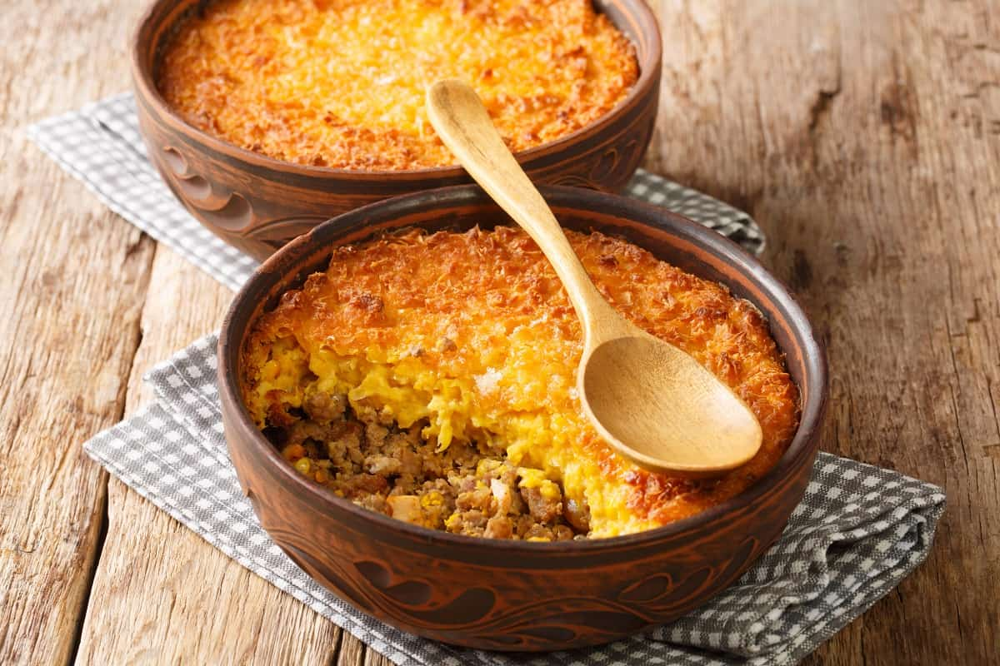

Pastel de Choclo

Descripción
El pastel de choclo es un plato tradicional chileno que combina sabores dulces y salados.
Consiste en una capa de carne y cebolla, cubierta con una mezcla de choclo (maíz) molido,
y se hornea hasta dorar. Es un plato completo y muy popular en las reuniones familiares.
Ingredientes
- 6 mazorcas de choclo fresco.
- 500 g de carne molida de res.
- 2 cebollas grandes picadas finamente.
- 3 huevos duros.
- 1/2 taza de aceitunas negras.
- 1/2 taza de pasas.
- 2 tazas de leche.
- 1 cucharada de azúcar.
- Sal y pimienta al gusto.
- 1 cucharadita de comino.
- Aceite para freír.
Procedimiento
-
Desgranar los choclos y molerlos en una procesadora de alimentos
junto con la leche hasta obtener una mezcla homogénea.
-
En una sartén, sofreír las cebollas en aceite hasta que estén
transparentes, agregar la carne molida, sal, pimienta y comino.
Cocinar hasta que la carne esté bien dorada.
-
En una olla, cocinar la mezcla de choclo a fuego medio,
revolviendo constantemente hasta que espese. Agregar el azúcar y ajustar la sal.
-
En una fuente para horno, colocar una capa de la mezcla de carne,
luego una capa de rodajas de huevo duro, aceitunas y pasas.
-
Cubrir con la mezcla de choclo y alisar la superficie.
Hornear a 180°C durante 30 minutos o hasta que la superficie esté dorada.